รูปที่ 14 แสดงการสร้างพอร์ตแชนแนล Group1 และ Group2
การใช้งานโปรแกรมในการออกแบบเครือข่าย การคอนฟิกสวิตช์ การคอนฟิกเราเตอร์ การสร้างค่าติดตั้งสวิตช์และเราเตอร์ การนำค่าติดตั้งที่ได้ไปใช้งาน
การคอนฟิกสวิตช์
ขั้นที่ 1 |
เปิดโปรแกรม สร้างสวิตช์ และเลือกเมนู Config ดังรูปที่ 4 |
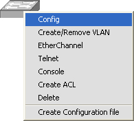
ขั้นที่ 2 |
กำหนดค่า IOS Version, hostname, Default Gateway และ Password ดังรูปที่ 5 |
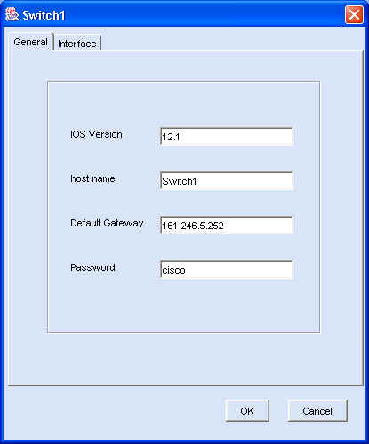
รูปที่ 5 แสดงการกำหนดค่าทั่วไปของสวิตช์
ขั้นที่ 1 |
เลือกเมนู Create/Remove VLAN เพื่อสร้างแลนเสมือน ดังรูปที่ 6 |
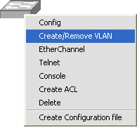
ขั้นที่ 2 |
กรอกหมายเลขแลนเสมือนแล้วกดปุ่ม Add ดังรูปที่ 7 |
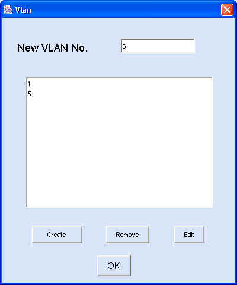
2)
การกำหนดไอพีแอดเดรสเพื่อใช้ในการติดตั้งค่าสวิตช์ผ่านโปรแกรมเทลเนต
ขั้นที่ 1 |
เลือกแลนเสมือน แล้วเลือกปุ่ม Edit ดังรูปที่ 8 |
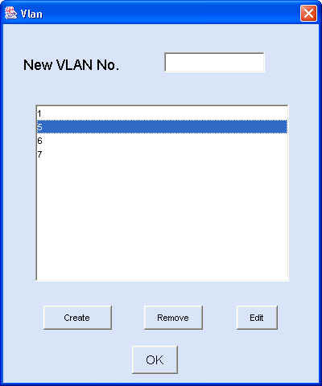
รูปที่ 8 แสดงการเลือกแลนเสมือนเพื่อกำหนดค่าให้แลนเสมือน
ขั้นที่ 2 |
กรอกหมายเลขไอพีแอดเดรสและ Subnet เลือกปุ่ม OK รูปที่ 9 |
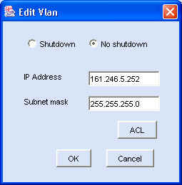
1) การกำหนดโหมดการทำงานเป็นแอคเซสลิงค์
ขั้นที่ 1 |
คลิ๊กขวาที่สวิตช์ เลือกเมนู Config เลือกอินเทอร์เฟสที่ต้องการกำหนดโหมดการทำงานและเลือกปุ่ม Properties ดังรูปที่ 10 |
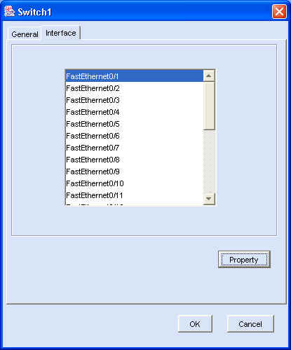
รูปที่ 10 แสดงการเลือกอินเทอร์เฟสของสวิตช์เพื่อกำหนดโหมดการทำงาน
ขั้นที่ 2 |
กำหนดโหมดการทำงานเป็นแอคเซสลิงค์ และเลือกแลนเสมือนที่ต้องการ ดังรูปที่ 11 |
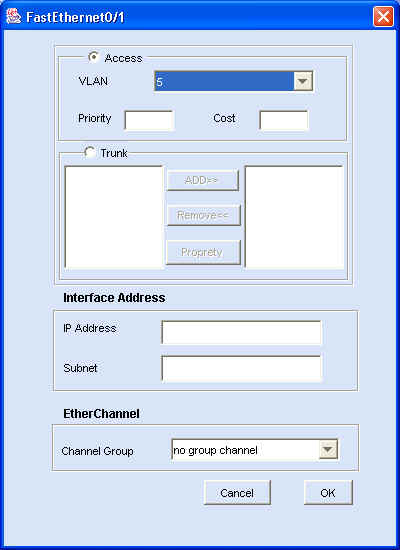
รูปที่ 11 แสดงการกำหนดค่าติดตั้งให้อินเทอร์เฟส FastEthernet0/1
เป็นแอคเซสลิงค์ และเป็นสมาชิกของแลนเสมือน 5
2) การกำหนดโหมดการทำงานเป็นทรังค์ลิงค์
ขั้นที่ 1 |
เลือกอินเทอร์เฟสของสวิตช์ที่ต้องการกำหนดค่า เลือกปุ่ม Properties เลือกโหมดการทำงานเป็น Trunk และเพิ่มสมาชิกแลนเสมือนโดยคลิ๊กเลือกแลนเสมือนที่ต้องการแล้วกดปุ่ม Add ดังรูปที่ 12 |
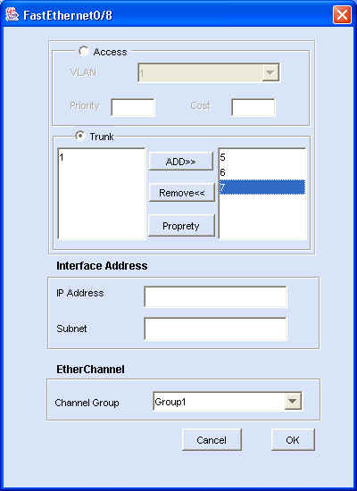
3) การสร้างอีเธอร์แชนแนลพอร์ตกรุ๊ป
ขั้นที่ 1 |
เลือกเมนู Ether Channel รูปที่ 13 |
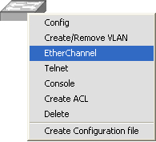
รูปที่ 13 แสดงการใช้งานเมนู EtherChannel
ขั้นที่ 2 |
เลือก Enable กรุ๊ปที่ต้องการ จากตัวอย่างเป็นการสร้างพอร์ตแชนแนล ดังรูปที่ 14 |
รูปที่ 14 แสดงการสร้างพอร์ตแชนแนล Group1 และ Group2
การกำหนดค่าติดตั้งต่างๆให้กับอีเธอร์แชนแนลพอร์ตกรุ๊ป
ทำได้เช่นเดียวกับการกำหนดค่าติดตั้งให้กับอินเทอร์เฟสของสวิตช์ เช่น การกำหนดให้เป็นแอคเซสลิงค์หรือทรังค์ลิงค์
ให้กับอินเทอร์เฟสของสวิตช์ เป็นต้น |
การทำโหลดแชริ่งโดยการใช้สแปนนิ่งทรีโปรโตคอล
การทำโหลดแชริ่งเป็นการแบ่งการใช้งานทราฟฟิกระหว่างลิงค์ของแต่ละแลนเสมือนดังรูปที่
15 โดยการกำหนดค่า Path Cost และ Port Priorities ให้กับแต่ละแลนเสมือน |
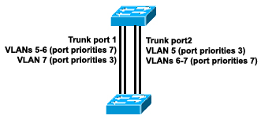
รูปที่ 15 แสดงการทำโหลดแชริ่งทรังค์ลิงค์โดยกำหนดค่า port priorities
ขั้นที่ 1 |
สร้างอีเธอร์แชนแนลพอร์ตกรุ๊ปตามจำนวนที่ต้องการดังรูปที่ 16 |
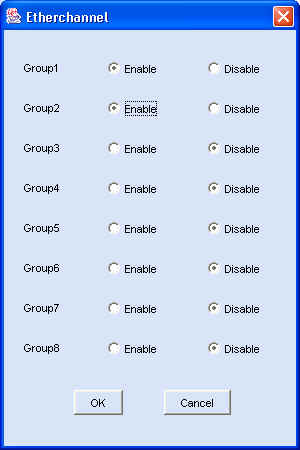
ขั้นที่ 2
|
กำหนดค่าติดตั้งของอีเธอร์แชนแนลพอร์ตกรุ๊ปให้เป็นทรังค์ลิงค์ที่มีแลนเสมือนที่ต้องการเป็นสมาชิก และกำหนดค่า path cost หรือ port priorities ให้กับแต่ละแลนเสมือนโดยเลือกแลนเสมือนที่ต้องการกำหนดค่า แล้วเลือกปุ่ม Property เพื่อกำหนดค่า ดังรูปที่17 |
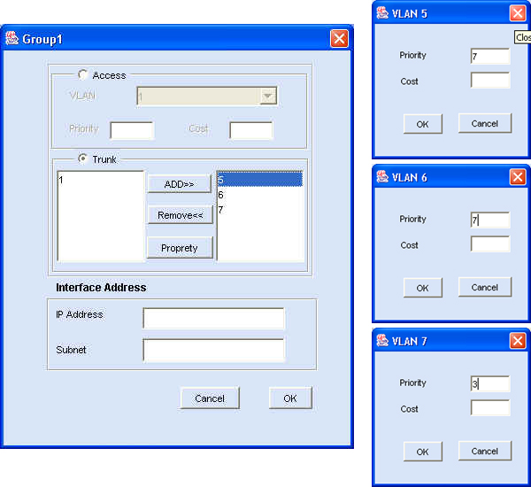
ขั้นที่ 3
|
เลือกเมนู Config เลือกอินเทอร์เฟสของสวิตช์ที่ต้องการตั้งค่าให้เป็นทรังค์ลิงค์เพื่อทำโหลดแชริ่งแล้วกำหนดค่าติดตั้งต่างๆ path cost หรือ port priorities ให้เหมือนกับอินเทอร์เฟสอีเธอร์แชนแนลพอร์ตกรุ๊ปที่เลือกเป็นแชนแนลกรุ๊ปบนอินเทอร์เฟสนั้นๆ ดังรูปที่ 18 |
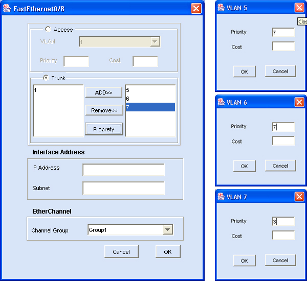
ขั้นที่ 4 |
กำหนดค่าให้กับอินเทอร์เฟสอื่นๆที่ต้องการให้ครบตามที่ต้องการ |
ขั้นที่ 1 |
เลือกเมนู Create ACL ดังรูปที่ 19 |
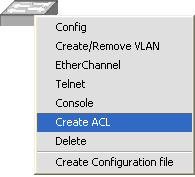
รูปที่ 19 แสดงการใช้งานเมนู Create ACL
ขั้นที่ 2 |
สร้างหมายเลข ACL ที่มีค่าอยู่ในช่วง 1-99 จากตัวอย่างเป็นการสร้าง Access-List 1 แล้วเลือกปุ่ม Edit เพื่อสร้าง ACE (Access Control Entry สำหรับ Access-List 1) ดังรูปที่ 20 |
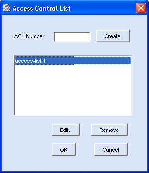
รูปที่ 20 แสดงการสร้าง Access-List 1
ขั้นที่ 3 |
เลือกปุ่ม Create เพื่อสร้าง ACEs ดังรูปที่ 21 |
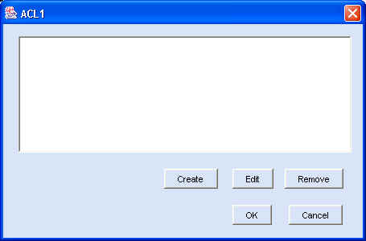
รูปที่ 21 แสดง ACEs ของ ACL1
ขั้นที่ 4 |
กำหนดข้อมูลการ permit และ deny ตามดังรูปที่ 22 |
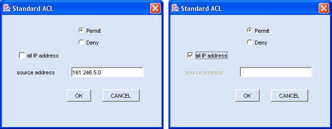
รูปที่ 22 แสดงการสร้าง Standard ACEs ของ ACL1
เมื่อสร้าง ACEs แล้วจะได้ผลดังรูปที่ 23 |
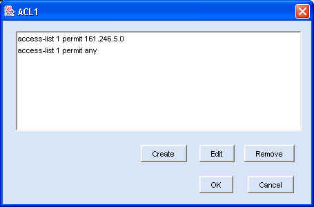
รูปที่ 23 แสดงผลจากการสร้าง Standard ACEs ของ ACL1
ขั้นที่ 1 |
เลือกเมนู Create ACL ดังรูปที่ 19 |
ขั้นที่ 2 |
สร้างหมายเลข ACL ที่มีค่าอยู่ในช่วง 100-199 ดังรูปที่ 24 แล้วเลือกปุ่ม Create เพื่อสร้าง ACEs |
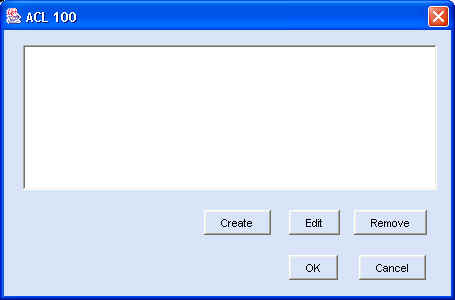
รูปที่ 24 แสดงการสร้าง Access-List 100
ขั้นที่ 3 |
กำหนดข้อมูลการ
permit และ deny ตามดังรูปที่ 25 |
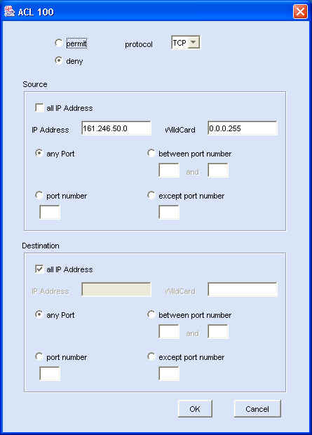
รูปที่ 25 แสดงการสร้าง Extend ACEs ของ ACL100
เมื่อสร้าง ACE แล้วจะได้ผลดังรูปที่ 26 |
เมื่อสร้าง
ACE แล้วจะได้ผลดังรูปที่ 26 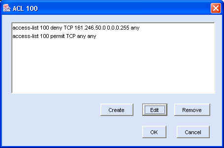
รูปที่ 26 แสดงผลจากการสร้าง Extend ACEs ของ ACL100
ขั้นที่ 1 |
เลือกอินเทอร์เฟสที่ต้องการกำหนดเอซีแอล เช่น อินเทอร์เฟสแลนเสมือน โดยเลือกเมนู Create/Remove VLAN, เลือกแลนเสมือนที่ต้องการกำหนดเอซีแอลแล้วเลือกปุ่ม Edit |
ขั้นที่ 2 |
เลือกปุ่ม ACL เพื่อกำหนด ACL |
ขั้นที่ 3 |
เลือก Access-List และทิศทางการตรวจสอบแพ็กเก็ต ดังรูปที่ 27 |
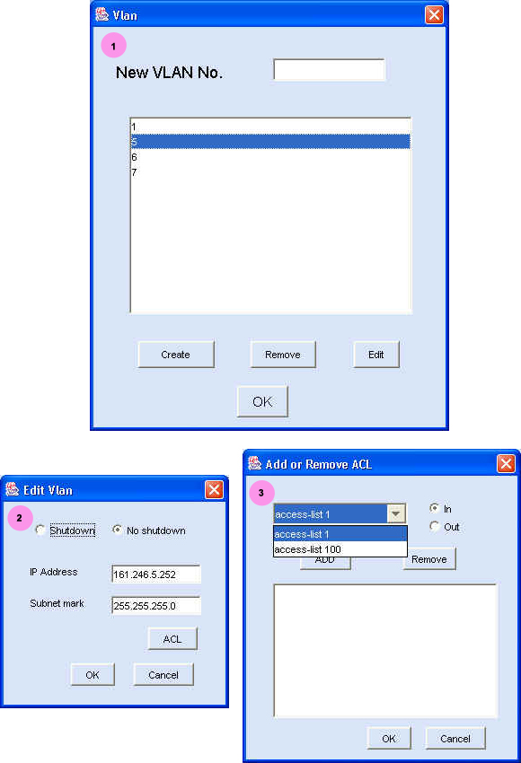
รูปที่ 27 แสดงการกำหนด ACL และกำหนดทิศทางในการตรวจสอบแพ็กเก็ต
ขั้นที่ 1 |
เลือกเมนู Console ดังรูปที่ 28 |
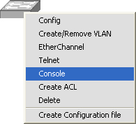
รูปที่ 28 แสดงการใช้งานเมนู Console
ขั้นที่ 2 |
เลือก Enable เมื่อต้องการให้มีการใช้รหัสผ่านในการล็อกอินพอร์ตคอนโซล และกรอกรหัสผ่านดังรูปที่ 29 |
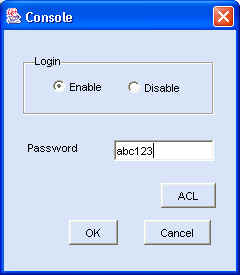
รูปที่ 29 แสดงการใช้รหัสผ่านเมื่อรล็อกอินผ่านพอร์ตคอนโซล
การกำหนดรหัสผ่านการใช้งานสวิตช์ผ่านโปรแกรมเทลเนต
ขั้นที่ 1 |
เลือกเมนู Telnet ดังรูปที่ 30 |
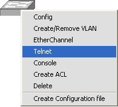
รูปที่ 30 แสดงการใช้งานเมนู Telnet
ขั้นที่ 2 |
เลือก Enable เมื่อต้องการให้มีการใช้รหัสผ่านในการล็อกอินโดยการใช้โปรแกรมเทลเนต และกรอกรหัสผ่านดังรูปที่ 31 |
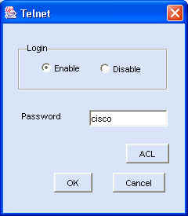
รูปที่ 31 แสดงการใช้รหัสผ่านเมื่อรล็อกอินผ่านโปรแกรมเทลเนต